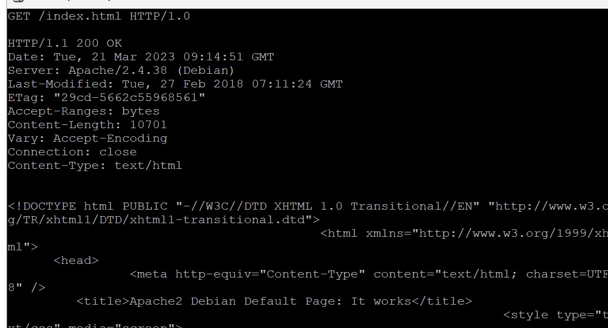
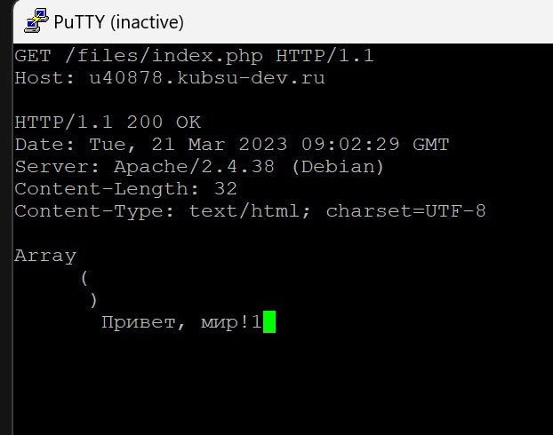
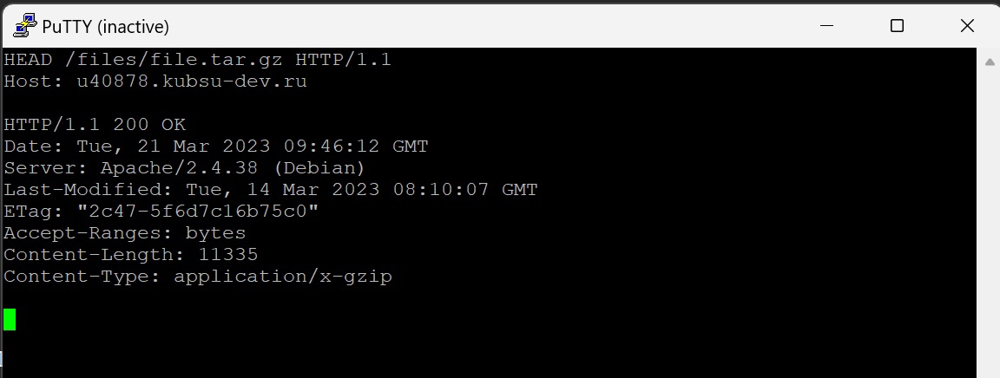
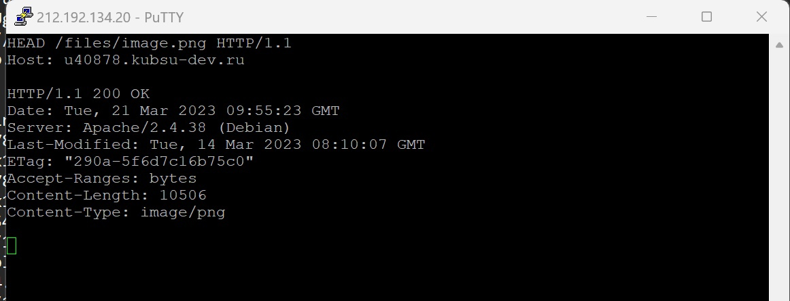
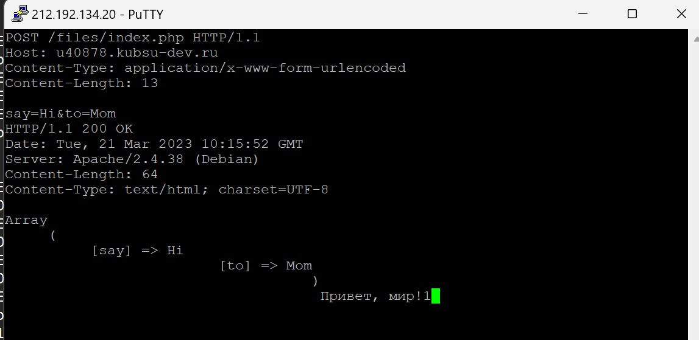
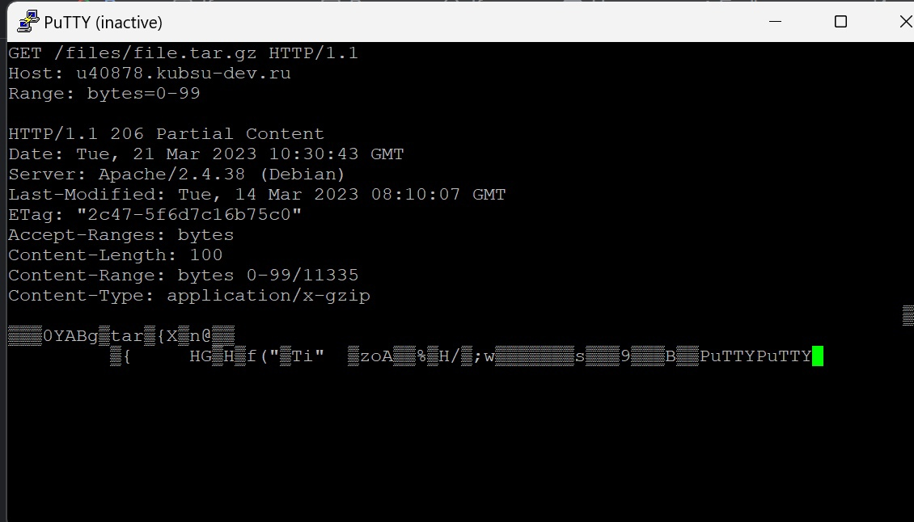
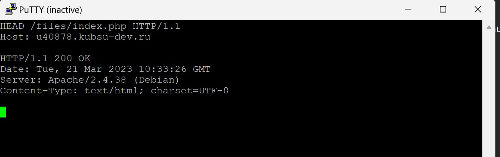

1)Получаем методом GET главную страницу ,протоколом HTTP 1.0 .

2)Получаем внутреннюю (ту,которую сами создали) страницу методом GET ,протоколом HTTP 1.1 .

3)Определяем размер файла file.tar.gz(строка content-length :11335 байт) методом HEAD ,не скачивая его.

4)Определяем медиатип ресурса image.png.(строка content-type:png)

5)Отправляем комментарий на сервер по адресу /files/index.php методом POST.

6)Получаем первые 100 байт файла file.tar.gz методом GET с помощью заголовка Range (указываем номера байтов от 0 до 99)

7)Определяем кодировку ресурса index.php методом HEAD (строка Charset)
